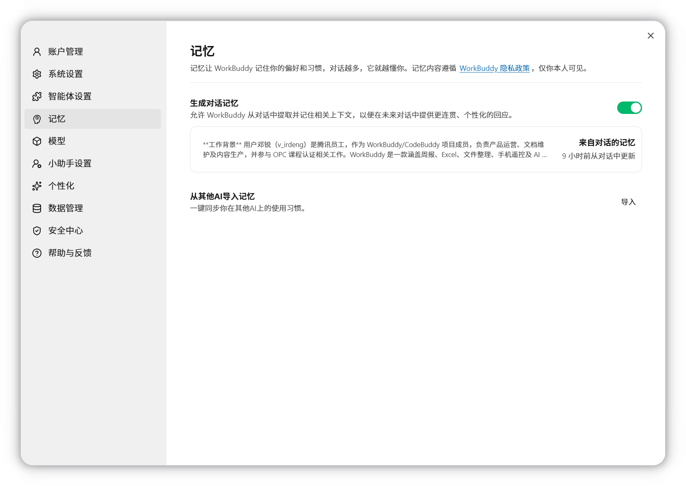
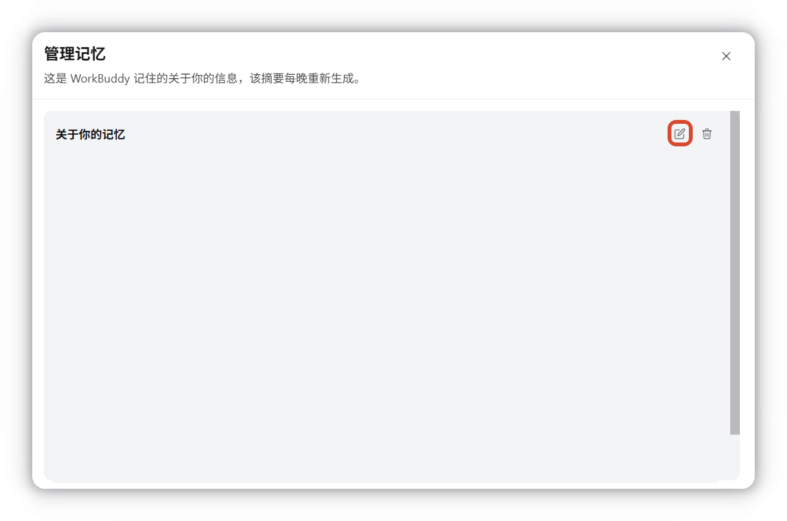
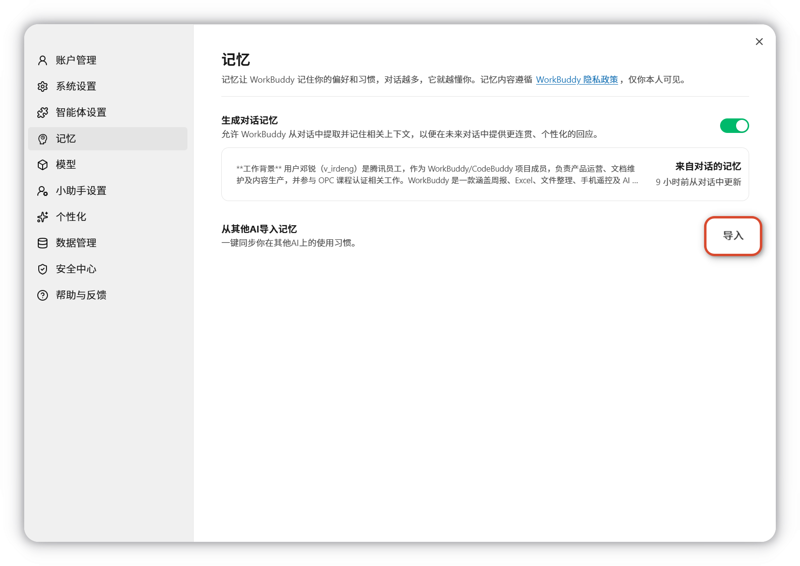
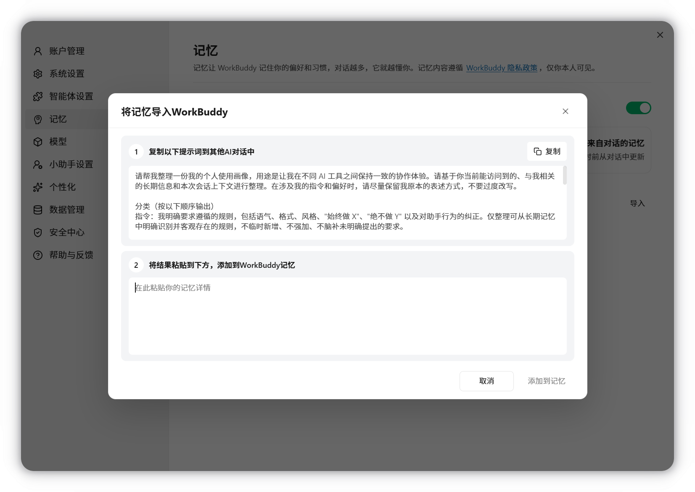
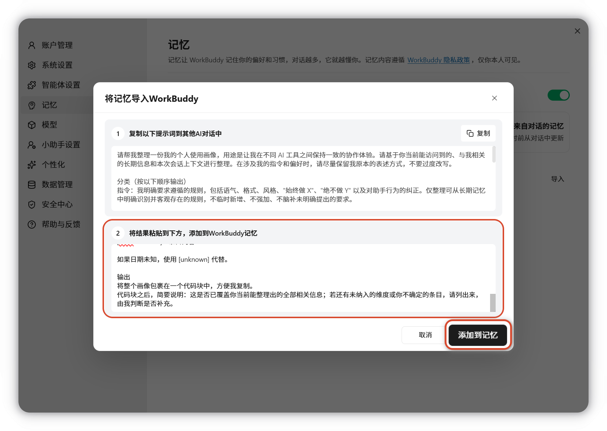

记忆
记忆让 WorkBuddy 记住你的偏好和习惯，对话越多，它就越懂你。
概述
记忆功能从您的会话历史中提取具有参考价值的个人信息（事实信息、偏好习惯、人物关系、近期跟进事项等）形成「记忆数据」并定期更新。后续对话或任务执行时，会将与当前请求相关的记忆作为背景信息一并参考。
- 提取频率：每晚整理当天会话，仅您本人可见。
- 编辑记忆：可从头像处进入「设置 - 记忆」中查看、编辑、删除或一键关闭。
如何使用记忆功能
生成对话记忆
默认开启，允许 WorkBuddy 从对话中提取并记住相关上下文，以便在未来对话中提供更连贯、个性化的回应。

管理记忆
- 查看： 记忆摘要每晚重新生成，打开已生成的记忆，可查看记忆内容
- 编辑： 点击右上角编辑图标，唤起对话框通过对话的方式告诉WorkBuddy要记住或忘记什么。
- 删除： 点击右上角删除图标，可以清空当前记忆。

导入记忆
支持同步您在其他AI上的使用习惯，点击开始导入：

复制示例提示词到其他AI产品的对话中：

将结果粘贴到下方，点击添加到记忆完成导入：

注意事项与重点提示
信息收集与使用
- 收集范围：从会话内容中由模型自动抽取的事实信息、偏好习惯、人物关系、跟进事项等
- 使用方式：
- 注入系统提示词作为上下文
- 支持对会话历史的检索（如「上周做过什么」「之前聊过的 XX」）
- 用户控制：支持新增、删除、更正记忆条目；可随时关闭功能；亦支持从其他 AI 导入记忆。
积分消耗提醒
记忆功能不涉及积分消耗：记忆提取由 WorkBuddy 自费完成，不向您额外消耗 token / 积分。
第三方共享
记忆功能不涉及第三方共享：记忆数据仅用于产品内部为您本人提供个性化服务。
隐私提醒
- 记忆内容遵循WorkBuddy 隐私政策，仅你本人可见。
- 会话中如涉及他人个人信息，请在提交前确认已获得相关授权。
使用建议
- 记忆由模型基于会话内容自动抽取，可能存在概括偏差或时效性问题，在依赖记忆做重要判断前建议先核验。
- 若您希望某些信息不被记住，可在「设置 → 记忆」中删除对应条目或一键关闭功能；关闭后将停止提取新的记忆。
- 关闭或删除记忆条目后，相应数据将停止用于后续对话，但已生成的输出不会因此追溯撤回。